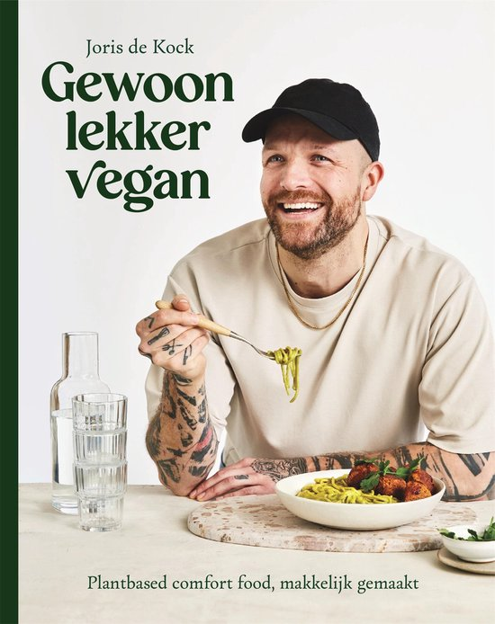
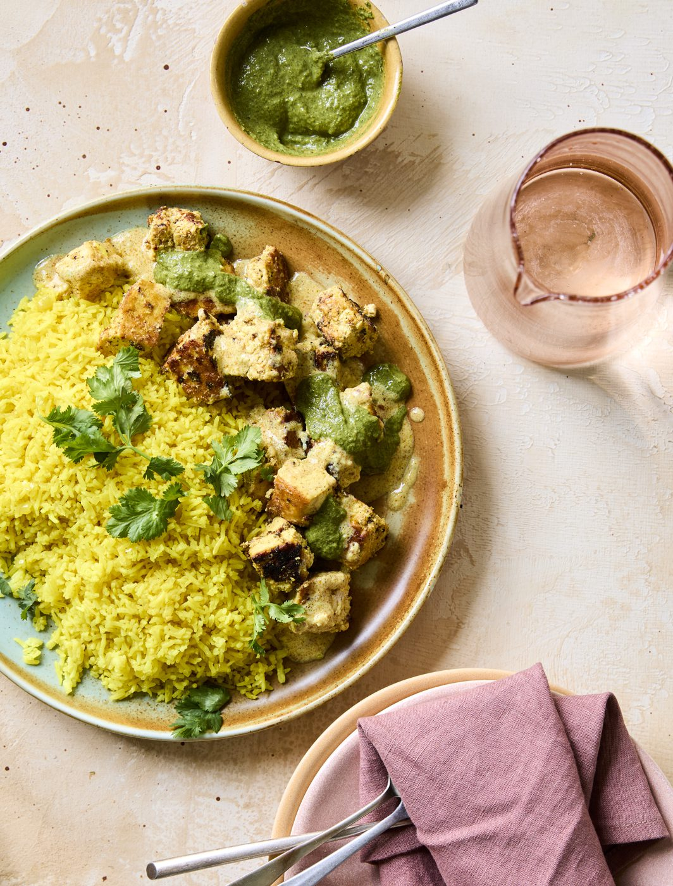
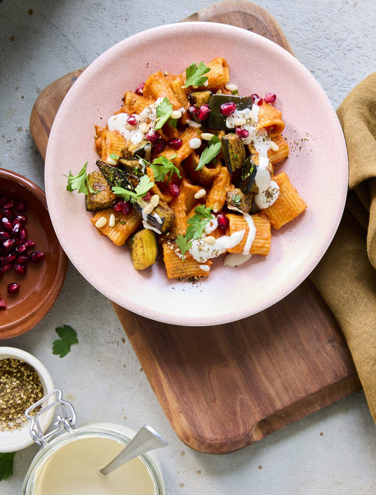
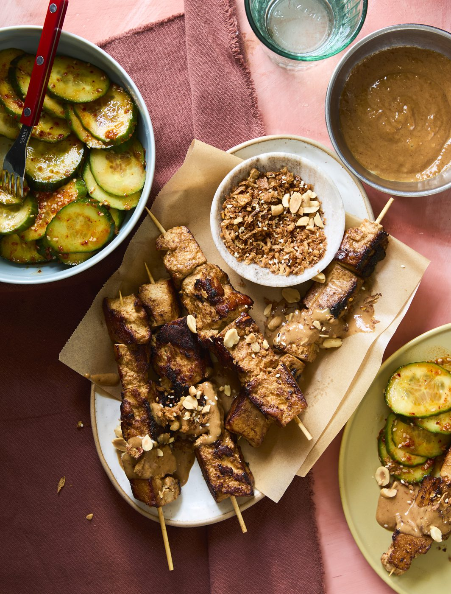
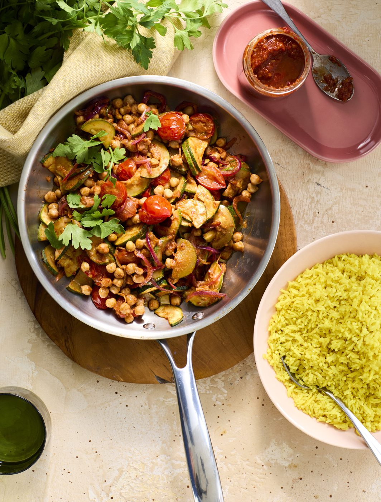
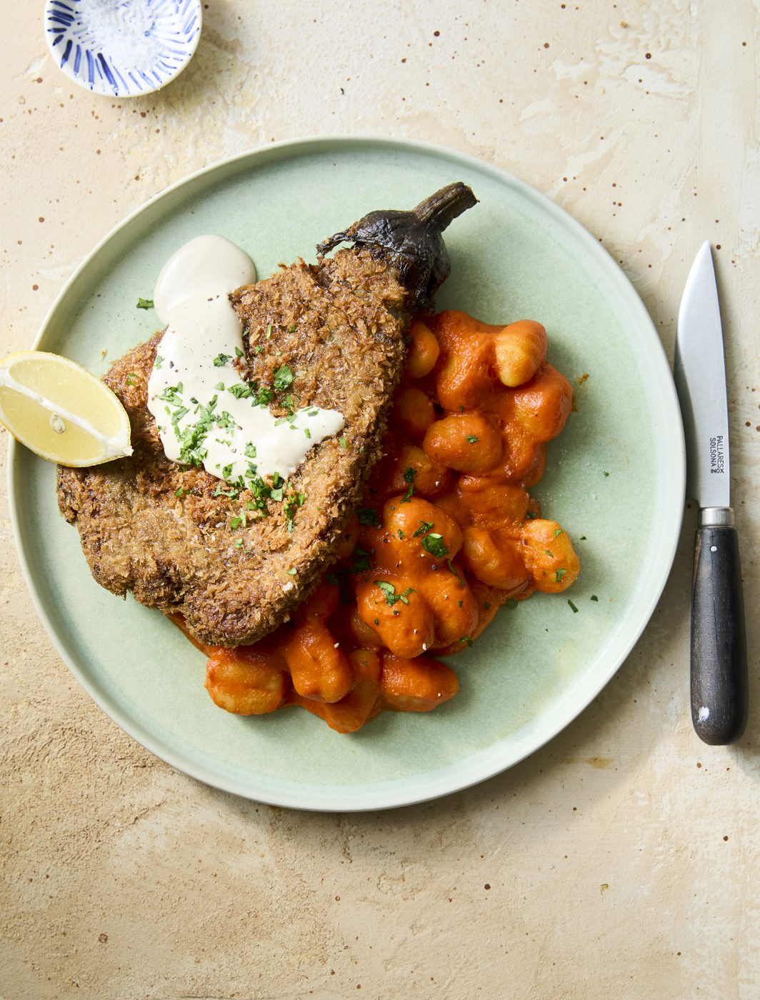
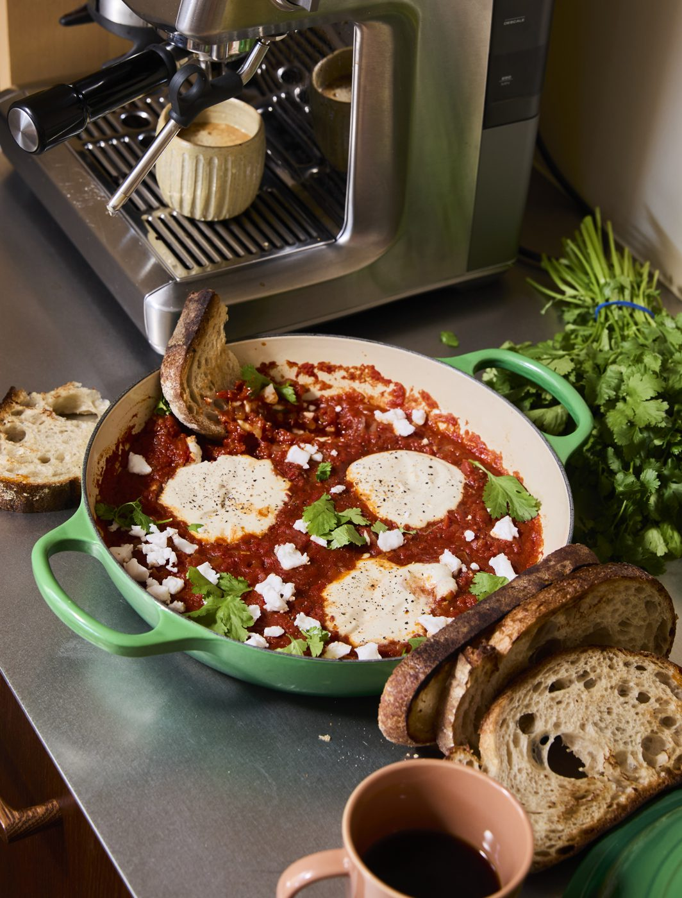
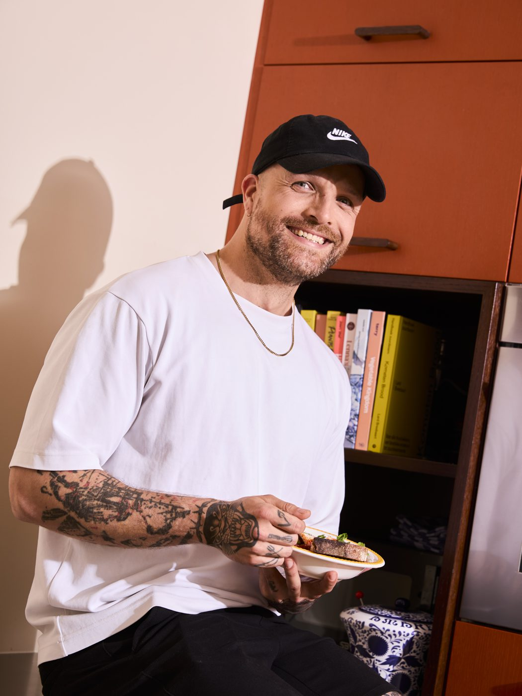

Plantbased comfort food, makkelijk gemaakt
Meer dan 80 recepten waar je écht zin in hebt. Comfort food dat toevallig plantaardig is, zonder gedoe en met ingrediënten die gewoon bij je supermarkt liggen. Zo lekker dat zelfs je niet-vegan vrienden zeggen: oké, dit is inderdaad heel lekker.
Bestel nu, 11 september op je mat.
300.000+ volgers op Instagram en TikTok

Volle borden waar je trek van krijgt. Geen compromis, gewoon goed eten.







Ik kook, schrijf en fotografeer alles zelf. De recepten waar ik het meest trots op ben staan nu in dit boek. Niet om je te vertellen wat je moet doen, maar om te laten zien wat er allemaal kan.
Bestel 'm op bol.com